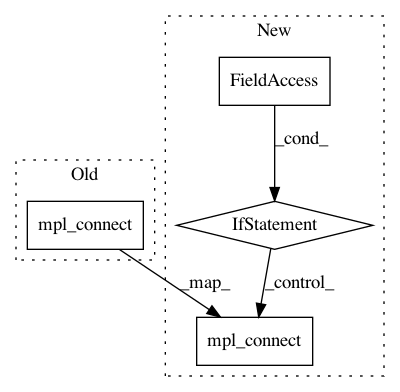

6e48b59abc3206b58fc2bbd44dca28b3bd59d041,hyperspy/drawing/mpl_hse.py,MPL_HyperSignal1D_Explorer,plot_signal,#MPL_HyperSignal1D_Explorer#,76
Before Change
self.navigator_plot.events.closed.connect(
self._on_navigator_plot_closing, [])
sf.events.closed.connect(self.close_navigator_plot, [])
self.signal_plot.figure.canvas.mpl_connect(
"key_press_event", self.axes_manager.key_navigator)
self.navigator_plot.figure.canvas.mpl_connect(
"key_press_event", self.axes_manager.key_navigator)
self.signal_plot.figure.canvas.mpl_connect(
"key_press_event", self.key2switch_right_pointer)
After Change
self.signal_plot = sf
sf.plot()
if sf.figure is not None:
if self.axes_manager.navigation_axes:
self.signal_plot.figure.canvas.mpl_connect(
"key_press_event", self.axes_manager.key_navigator)
if self.navigator_plot is not None:
self.navigator_plot.events.closed.connect(
self._on_navigator_plot_closing, [])
sf.events.closed.connect(self.close_navigator_plot, [])
In pattern: SUPERPATTERN
Frequency: 3
Non-data size: 4
Instances
Project Name: hyperspy/hyperspy
Commit Name: 6e48b59abc3206b58fc2bbd44dca28b3bd59d041
Time: 2017-05-26
Author: frandelapena@gmail.com
File Name: hyperspy/drawing/mpl_hse.py
Class Name: MPL_HyperSignal1D_Explorer
Method Name: plot_signal
Project Name: hyperspy/hyperspy
Commit Name: 8b4b05b26fc7ce3a316ee998cc15dc3c9d315a61
Time: 2018-04-04
Author: frandelapena@gmail.com
File Name: hyperspy/drawing/tiles.py
Class Name: HistogramTilePlot
Method Name: create_figure
Project Name: hyperspy/hyperspy
Commit Name: 6e48b59abc3206b58fc2bbd44dca28b3bd59d041
Time: 2017-05-26
Author: frandelapena@gmail.com
File Name: hyperspy/drawing/mpl_hie.py
Class Name: MPL_HyperImage_Explorer
Method Name: plot_signal